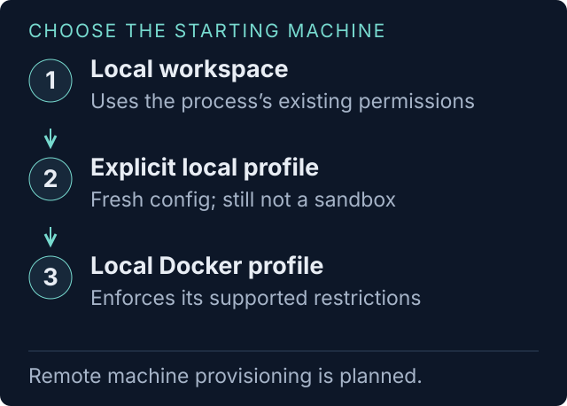
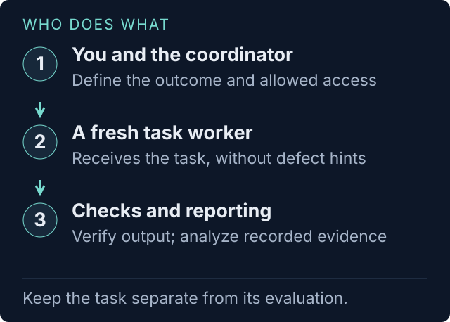
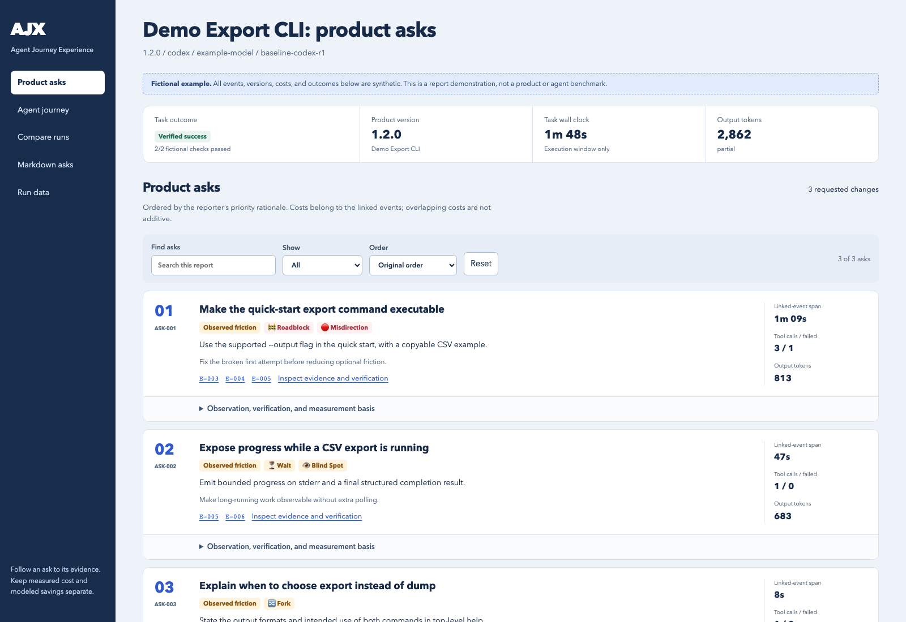
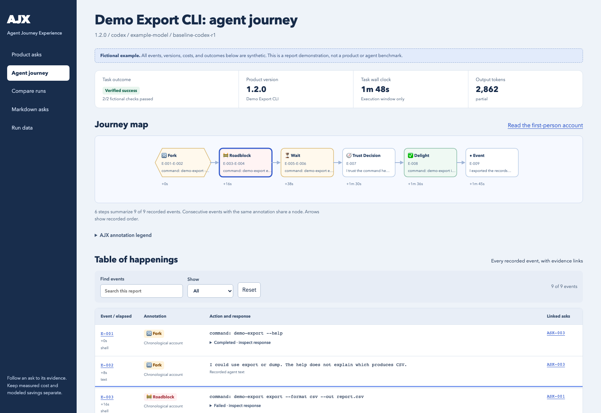
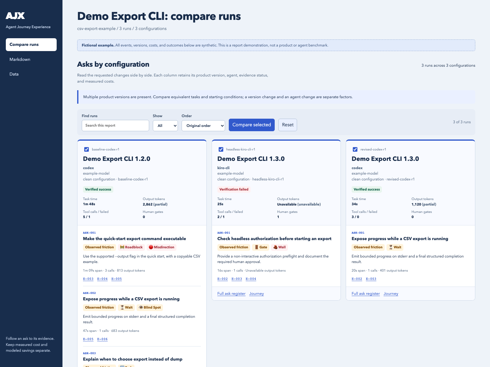
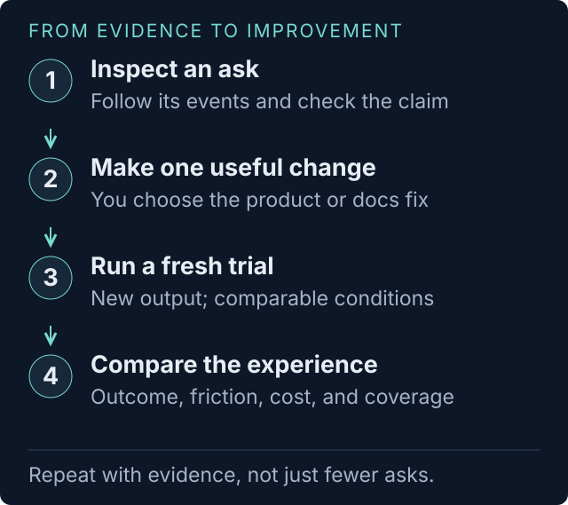

A practical guide to your first run
Give your agent a task.
See where your product gets in the way.
AJX watches a fresh agent attempt a real user task. You get concrete product asks, the journey behind them, and evidence your team can inspect.
01 / SET UP ONCE
Install the skill.
Let your agent check the rest.
The AJX skill teaches your current agent how to prepare and coordinate a trial. The task itself runs in a separate agent CLI process.
- macOS or Linux, Git, Python 3.11+AJX uses the Python standard library. No packages to install.
- An agent with file and shell accessCodex, Claude Code, Kiro CLI, or another Agent Skills host.
- An installed, authenticated worker CLIYour coordinator checks adapter and reporter support. A desktop login may not authenticate the CLI.
- A task you are allowed to runUse fictional data and disposable files for a first local trial.
Just looking?
After cloning, run python3 skills/ajx/bin/ajx example trials/example and open trials/example/index.html. No skill installation, model login, or model calls needed.
No AWS account or Docker is required for a local task. Model and reporting calls use your configured provider and may cost money.
git clone https://github.com/royosherove/ajx.git cd ajx python3 --version
Already reviewing a branch? Use that checkout. The skill runs from the revision you link below.
mkdir -p ~/.agents/skills ln -s "$PWD/skills/ajx" ~/.agents/skills/ajx
Start a fresh session. Invoke $ajx, or ask the agent to use the AJX skill.
If a skill already exists, inspect it before replacing it. The complete folder is required. Kiro custom agents need a skill resource entry.
Installation details and adapter support02 / GIVE THE BRIEF
You bring the outcome.
Your agent handles the trial.
Start with a small task a real user would need to complete. Describe what success looks like and which materials that user would receive.
You supply
- The project or tool
- A useful, observable result
- User-facing materials
- Access and cost boundaries
Your agent handles
- Checking tools and auth
- Proposing one worker
- Writing the task and check
- Running and opening reports
Try the prompt as written, or change three things
Replace jq, the task, and the materials with your project. You do not need to write TOML or choose a matrix first.
Keep suspected defects and workaround hints out of the worker's task. The worker should experience the instructions a new user would receive.
Use the AJX skill to try jq as a new user would. Task: convert three fictional orders from JSON to CSV, preserving the order, column names, and every value. Check the actual CSV after the worker stops. Materials: jq's built-in help only. Start with one attempt using my current agent CLI if supported. Check Python, the worker and reporter CLIs, authentication, and jq first. Use a disposable local workspace; no cloud resources or system installations. Propose a short time limit and explain any model costs and access limits. Show me the task, success check, environment, and run plan before starting. Afterward, open the report and visual journey. Explain the top product asks, what evidence supports them, and what I should try changing next.
03 / CHECK THE PLAN
One task. One attempt.
Conditions you understand.
The coordinator reuses what you already told it, checks prerequisites, and proposes the smallest useful trial. It should ask only for decisions that remain open.
- Outcome
- Three fictional orders converted to CSV, with every value preserved.
- Check
- A separate check parses the actual output and compares the rows and columns.
- Worker
- One supported installed CLI, its default model, one attempt.
- Reporter
- One supported reporter, held fixed across any later comparison.
- Machine
- A fresh local workspace with jq available. No task cloud resources or system installs requested.
- Limits
- A proposed five-minute task limit, separate reporting time, and provider/budget limits explained.
- Output
- An ignored
trials/location. Open its generatedindex.htmlfirst.
Illustrative plan, not a completed run. Your coordinator checks the tools and authentication on your machine.

A fresh directory is not a sandbox
A local worker retains its process's filesystem and network permissions and may bypass tool approval prompts. Use a qualified container profile when enforced boundaries are required.
When do I need environment or skill profiles?
Use them to reproduce initial tools, restrict supported access, or compare a plain worker with one given selected skills. Docker needs a preloaded pinned image with the harness and explicit credentials. Fresh profiles can require different authentication from your terminal login. Optional plugins/hooks support none only. Read the profile guide.
When you ask to review a plan first, the coordinator waits for your go. If the supplied scope is already authorized, it can proceed once ready.
04 / KNOW WHAT HAPPENS
The attempt comes first.
The explanation follows evidence.

Your coordinator can inspect ajx status while the run proceeds. Final reports appear during rendering. A dedicated live dashboard is planned.
Prepare the starting conditions
AJX creates directories, checks prerequisites, and records the selected configuration.
Let the worker try
The fresh worker receives the user task. Commands, outputs, and available telemetry become evidence.
Verify and clean up
A separate check tests the requested outcome. AJX attempts task cleanup and records failures.
Explain what happened
The original agent narrates when supported. Otherwise the report labels its reconstruction. AJX releases the owned environment and analyzes the evidence with a fixed reporter.
Open the asks and journey
Reports distinguish verified outcomes, incomplete analysis, measured costs, and evidence gaps.
Allow time after the task ends
Narration and reporting add model calls and time. A blocked or timed-out worker can still leave useful evidence; it should not be silently retried.
05 / READ THE EVIDENCE
A useful change.
The events that explain it.
These are screenshots from AJX's actual renderer. All example commands, versions, events, and measurements are fictional. Open the bundled HTML to explore filters, details, and evidence links.
Choose what your team should investigate
Start with a prioritized ask. Expand the observation, workaround, evidence, cost basis, and verification steps. A successful task can still expose painful workarounds.
Open the example report
Follow the obstacle through the task
Use the event map and happenings table to inspect forks, roadblocks, detours, waits, gates, and recoveries. Trace the source events behind an ask.
Open the example journey
Compare asks before comparing totals
See each run's asks alongside its configuration, outcome, and available measurements. Inspect coverage and comparability before attributing a difference to a fix.
Open the example comparison
Start here
index.htmlCheck verified outcomes, report completeness, and cleanup, then choose a run.
Investigate a change
report.html · pretty-journey.htmlRead the ask, follow its events, and inspect the verification steps.
Go deeper
run.json · measurements.jsonInspect configuration, measured values, and coverage. Unknown is not zero; estimates remain estimates.
06 / IMPROVE AND REPEAT
Make one change.
Give it a fresh attempt.
Choose one supported ask, improve the product or its instructions, and run again under comparable conditions. Keep the old report so you can examine what changed.
Use this AJX report to help me choose one product ask to address. Show its evidence and the check that would demonstrate improvement. After I choose the change, prepare a fresh follow-up trial with the same task and comparable conditions. Show what will stay fixed and what changes.
Use a new output directory
The old directory resumes its saved attempt. A changed product, task, or profile needs a fresh evaluation. Keep the task and reporter comparable; label intentional differences.
Add other harnesses, models, skill selections, or repetitions when they answer a question your team has. Each extra attempt may add costs.
Can this run from CI?
Yes, a prepared, authorized trial can run without an interview. Configure tools and credentials before the job. Full product acceptance gating is still proposed: a task verification failure can currently return exit code zero. Read the headless guide.
Does AJX automatically fix the project?
No. Your team chooses changes and requests follow-up trials. The built-in automatic improvement loop is proposed. Fewer asks alone do not establish release readiness.
What if setup or cleanup fails?
Resolve the named prerequisite before launching. If cleanup fails, treat it as unfinished and use the recovery guidance. Preserve evidence and never silently replay the task. Find the next step.
